Package Sensors contains ideal measurement components to determine absolute and relative kinematic quantities, as well as cut-forces, cut-torques and power. All measured quantities can be provided in every desired coordinate system.
| Name | Description |
|---|---|
| 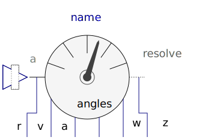 AbsoluteSensor | Measure absolute kinematic quantities of frame connector |
| 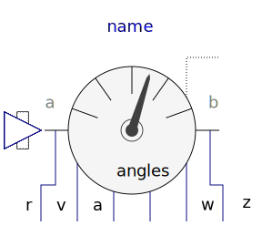 RelativeSensor | Measure relative kinematic quantities between two frame connectors |
| 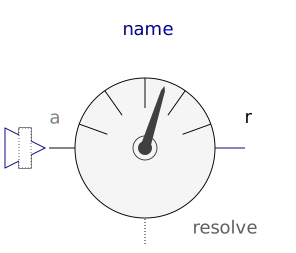 AbsolutePosition | Measure absolute position vector of the origin of a frame connector |
| 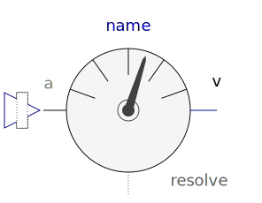 AbsoluteVelocity | Measure absolute velocity vector of origin of frame connector |
| 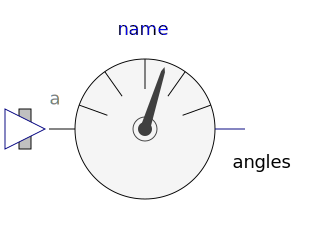 AbsoluteAngles | Measure absolute angles between frame connector and the world frame |
| 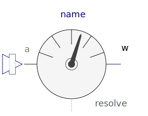 AbsoluteAngularVelocity | Measure absolute angular velocity of frame connector |
| RelativePosition | Measure relative position vector between the origins of two frame connectors |
| 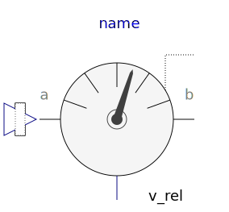 RelativeVelocity | Measure relative velocity vector between the origins of two frame connectors |
| 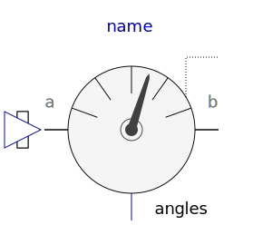 RelativeAngles | Measure relative angles between two frame connectors |
| RelativeAngularVelocity | Measure relative angular velocity between two frame connectors |
| Measure the distance between the origins of two frame connectors | |
| 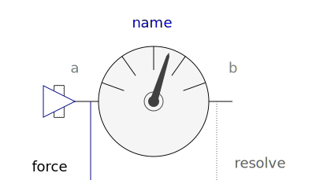 CutForce | Measure cut force vector |
| 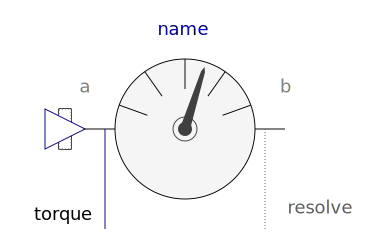 CutTorque | Measure cut torque vector |
| 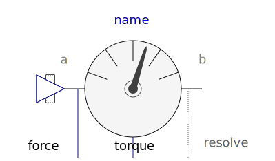 CutForceAndTorque | Measure cut force and cut torque vector |
| 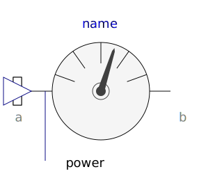 Power | Measure power flowing from frame_a to frame_b |
|
|
Transform absolute vector in to another frame |
| 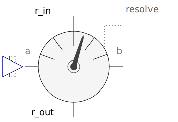 TransformRelativeVector | Transform relative vector in to another frame |
| Internal package, should not be used by user | |
| 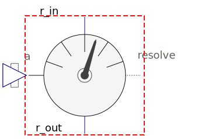 TansformAbsoluteVector | Obsolete model will be removed in future versions, use TransformAbsoluteVector instead! |
| 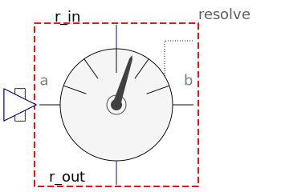 TansformRelativeVector | Obsolete model will be removed in future versions, use TransformRelativeVector instead! |